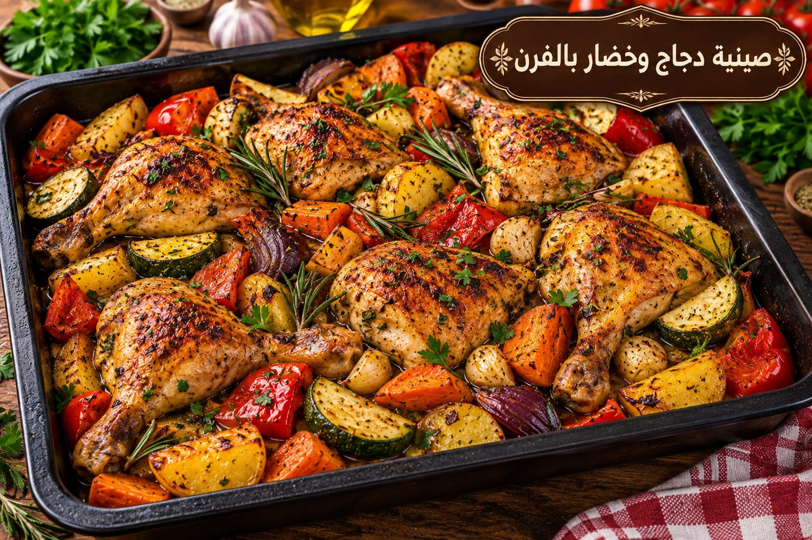

صينية دجاج وخضار بالفرن
دجاج وخضار مشوية بالفرن

مقادير صينية دجاج وخضار بالفرن
- 1 دجاجة مقطعة
- 3 بطاطا
- 2 جزر
- 2 بصل
- 1 فلفل رومي
- 3 ملاعق زيت زيتون
- 1½ ملعقة صغيرة ملح
- 1 ملعقة صغيرة بابريكا
- ½ ملعقة صغيرة كركم
- ½ ملعقة صغيرة فلفل أسود
- 1 كوب ماء أو مرق
طريقة عمل صينية دجاج وخضار بالفرن
- سخني الفرن إلى 200°م.
- اخلطي الدجاج والخضار بالزيت والبهارات والملح.
- رتبي الخضار ثم الدجاج وأضيفي كوب الماء أو المرق.
- غطي الصينية 35 دقيقة ثم اكشفيها 20–25 دقيقة حتى ينضج الدجاج ويتحمر.